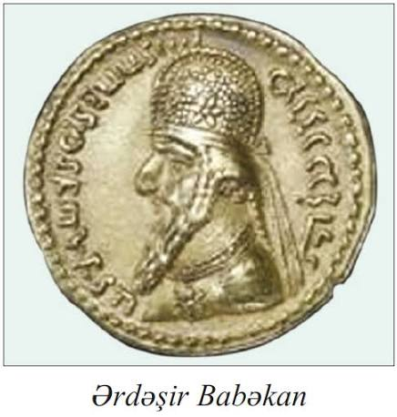
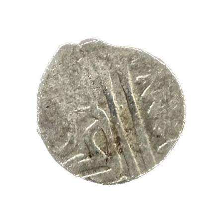
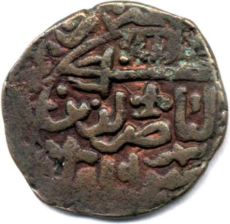

Əlində tutub 360° döndərə biləcəyin əşyalar — sikkələr və qablar, minilliklər öncədən qalma.
Bu sikkə orta əsrlərdə Azərbaycan ərazisindəki dövlətlərin iqtisadi müstəqilliyini nümayiş etdirir. Kufi xətti ilə yazılmış kitabə dövrün xəlifəsinin adını göstərir.
Sikkə zərb etmək dövlətçilik rəmzi idi. Bu artefakt o dövrün ticarət sistemi haqqında məlumat verir.
Ordubad ətrafında aparılan qazıntılarda tapılan bu artefakt qədim Naxçıvan tayfalarının yüksək sənətkarlıq bacarıqlarını göstərir.
Naxçıvan qədim Azərbaycan dövlətçiliyinin ən qədim mərkəzlərindən hesab olunur.

İslamaqədərki dövrün pul dövriyyəsini əks etdirən bu dirhəm, Sasani şahənşahının portreti və atəşgah simvolu ilə zərb olunub. Ərəb fəthindən əvvəl Azərbaycanın Sasani imperiyasının bir əyaləti olduğunu göstərir.
Sonrakı ərəb dirhəmlərinin çəki və forma standartı məhz bu Sasani sikkələrindən götürülüb.

Şirvanşahlar sülaləsinin zərb etdiyi bu sikkələr üzərində hökmdarın adı və dövrün kəlmeyi-şəhadəti həkk olunub. Dövlətin təxminən 800 il davam edən varlığının iqtisadi sübutlarından biridir.
Şirvanşahlar Azərbaycan tarixinin ən uzun hakimiyyət sürən sülaləsi olub, bu sikkələr onların hər dövründən iz daşıyır.

Azərbaycan Atabəyləri (Eldənizlər) dövlətinin zərb etdiyi bu sikkə, Nizami Gəncəvinin yaşadığı dövrün iqtisadi həyatından bir parçadır. Səlcuq ənənələrini davam etdirən həndəsi naxışlarla bəzədilib.
Bu sikkənin zərb olunduğu dövrdə Gəncədə Nizami Gəncəvi əsərlərini yazırdı — Zal 4-dəki Möminə Xatun türbəsi də elə bu dövrün abidəsidir.